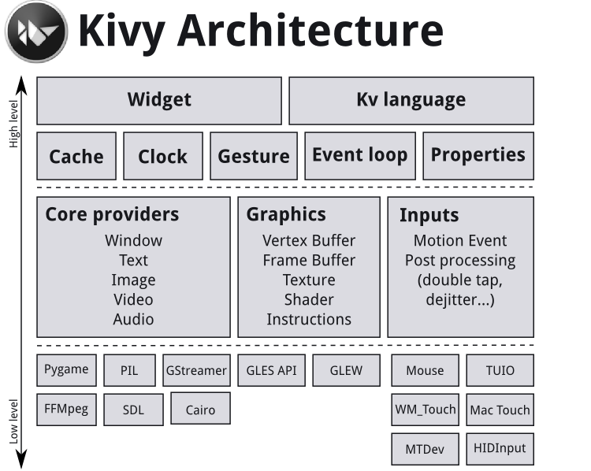

|  |
Kivy is a cross-platform Python framework for rapid development of application. Using python-for-android technology to create a python distribution that includes kivy allows you to run the same application code on any Android device. All without modify a single line of code. This is possible because the framework itself is written in pure python. As many other frameworks do, kivy provides a set of classes for building the GUI, but also to manage internal process and touch input. However, Kivy comes with a further kind of approach. Both GUI layout and widgets can be described using the Kv Language. This technology is cross between UIML ( Layout definition ) and XML ( Structure definition ). The second approach makes kivy easily extensible. |